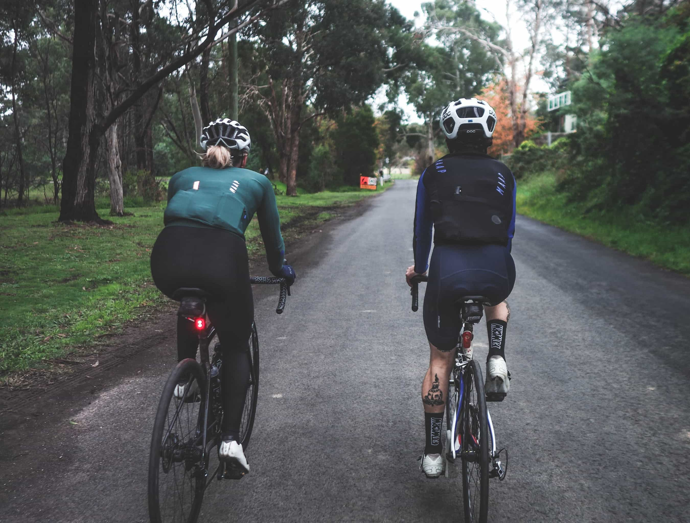

Home

About

History

Blogs
Role: Tractor operation, general farm duties and vehicle maintenance
Role: Bushfire hazard reduction, Invasive species management
Role: Production and assembly of handbrake, speedo, accelerator, clutch and bonnet cables


You can find my profile on any of the above platforms by selecting the respective icon